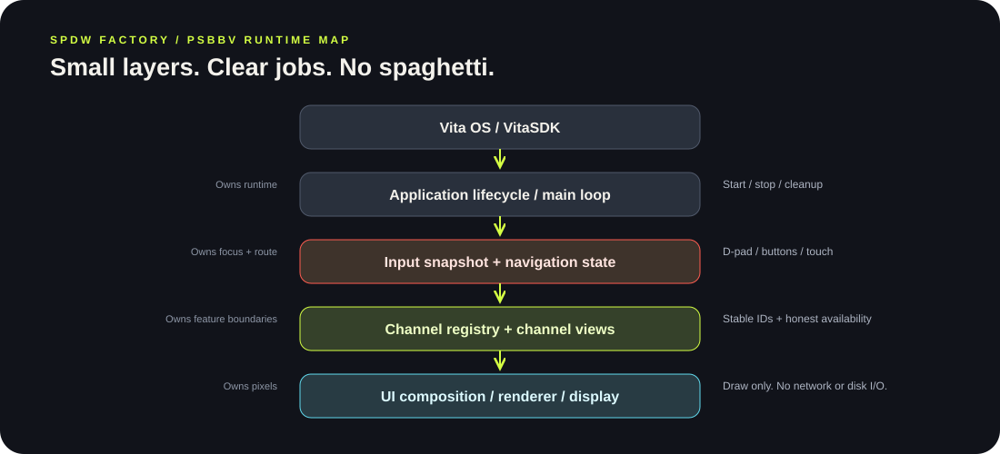

Platform & lifecycle
Owns Vita APIs, startup, shutdown, input sampling, display and suspend/resume. Keep the platform boundary narrow and reviewable.
The Vita has limited resources. Our architecture should spend them on the experience—not on a dependency maze with a fancy README.
Each layer owns a job. Rendering draws. Navigation navigates. Nobody sneaks a blocking network request into a frame.

Owns Vita APIs, startup, shutdown, input sampling, display and suspend/resume. Keep the platform boundary narrow and reviewable.
Owns route, focused item, back stack and transitions. Unknown channel IDs return safely to Home; focus must not be hidden inside drawing code.
Stores stable IDs, titles, art references and explicit availability: implemented, planned, unavailable or disabled.
Views describe content and interaction targets. Rendering performs no filesystem scans, network calls or blocking platform work.
Stores only preferences we actually need. Missing or corrupt settings fall back to safe defaults instead of bricking Home.
An optional subsystem can fail without taking the whole navigator down. Offline and unavailable states are part of the design, not afterthoughts.
Network, storage scans and content discovery belong in bounded tasks outside the main frame loop. A menu animation should not wait for a server.
| Path | Responsibility | State |
|---|---|---|
src/main.cpp | Vita entry point, renderer, input sampling, main loop and cleanup. | Present |
src/app/App.cpp | Navigation state, Home, channel placeholders and application menu. | Present |
include/psbbv/app/App.hpp | Application interface and state ownership. | Present |
include/psbbv/ui/Theme.hpp | Centralized visual colour tokens. | Present |
docs/ | Product, design, architecture and testing material. | Present |